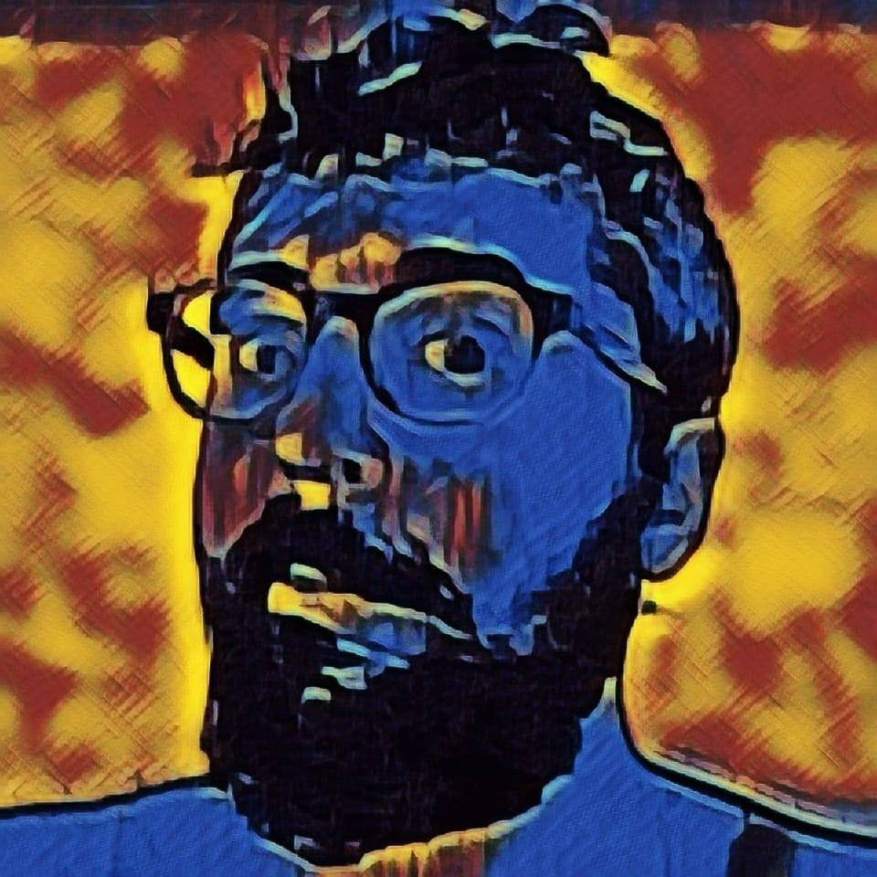

Panagiotis Kourtesis is PhD candidate and researcher in Experimental Psychology & Cognitive Neuroscience at the University of Edinburgh in collaboration with University Suor Orsola Benincasa of Naples.
Also he is VR specialist and workshops coordinator at uCreate Studio of University of Edinburgh ( uCreate Studio
), and the interdisciplinary research centre "Scienza Nuova" ( Scienza Nuova
). He is certified Virtual Reality software developer with a knack for interdisciplinary (Arts, Engineering, Robotics, A.I., Internet of Things) research, cultural, and educational projects. His current research interests include VR Neuroscience & Neuropsychology, VR Rehabilitation & Therapy, Cyber-psychology,Human Computer Interaction, Telemedicine, & Research Methods (VR) & Statistics (R & JASP).

Twitter: Visit Page
YouTube: Visit Page
LinkedIn: Visit Page
Unity Connect: Visit Page
Website: Visit Page
Contact:p.kourtes[at]exseed.ed.ac.uk